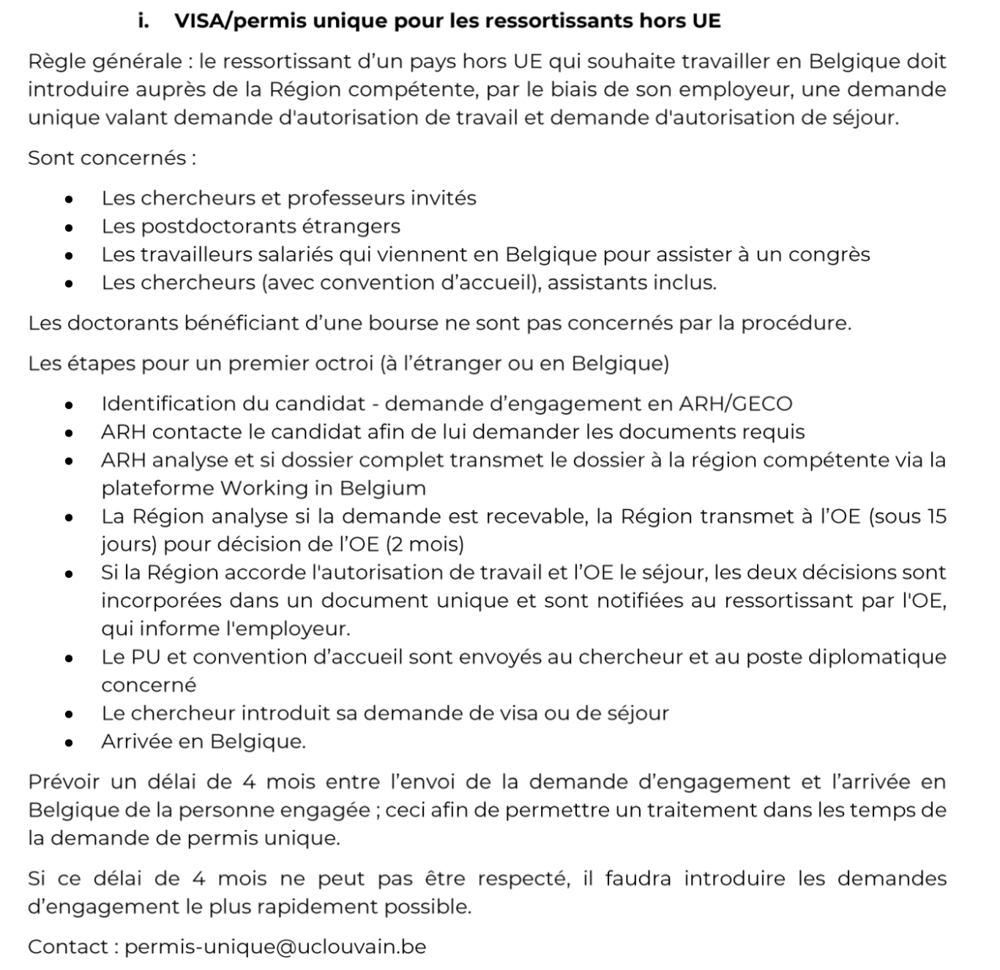

Living in Belgium#
All sections will be divided into EU/Non-EU
Bank account#
Generally, Belgian banks require your Belgian ID card to create an account. But upon request and prior inquiry they can create an account using your passport (example, AXA bank).
Another option is to use digital banks like N26.
Health care#
How your healthcare is managed in Belgium depends on whether you are a citizen of the European union or not (see more information here). You will likely need to join a mutualité, who will administer the partial refund of your medical care. They all offer the same essential service – you submit your consultation and medication receipts to them and they refund you the amount you should get back from the government. Each also offers its own additional package which gives you some additional cover (for an extra premium of course!). Every time you visit a healthcare provider, keep all your receipts! Note that some providers will definitely charge more than the government will refund. Choose carefully.
More info at http://www.belgique-infos.be/belgium/health/?lang=en#.WE6qQhRFGOo
Taxes#
Every Year you will need to fill a tax declaration form and send it in usually by mid July.
- (eg: in case of online form: for 2020 the tax declaration has to be sent in by july 15th 2021/for 2019 the date was july 16th 2020...)
- (eg: in case of by post: for 2020 the tax declaration has to be sent in my june 30th)
Note: By post the deadline is earlier(upto 15 days), as the post might take a while to reach.
2 ways to go about it:
1. By post ( you will receive the form + send back the completed form)
2. Online (MyMinfin.be)
For logging in: you will need your belgian ID card/stay permit + your password for the card. You can use an eID reader/ itsme app/or a few other ways listed on the page when you click login.
Once you login onto the website MyMinfin.be:
1. select : Ma déclaration / Ma proposition de déclaration simplifiée (Tax-on-web)
2. select: Accéder à ma proposition de déclaration simplifiée
3. consult the document : Proposition de déclaration simplifiée - Exercice 2021
4. if there are no changes to your current situation, as mentioned in the document you will have to do nothing. And at the bottom of the page you will see the calculated result/balance.
Registration at the commune#
-
You probably already have a Visa issued by the Belgian Embassy in your country. This visa allows you to enter Belgium, but it is not the same as a residence permit. You have to register at the local authorities (called "the commune") to receive your residence permit. The duration of the residence permit is typically tied to your UCL work contract (e.g., 2 years).
-
On the side note: If you are already residence in any EU countries but you are not EU citizen, you do not need to apply for a visa. When you arrive to Brussels you can directly apply for residence permit. You have 3 months time to apply for this residence permit. (Your residence permit from another EU country is valid for 3 months in Belgium)
-
You will need to visit the foreigners office in your local commune within eight days of arriving in Belgium. Note that different areas of Belgium are governed by different communes – there is one for Ottignies-Louvain la Neuve, one for Bruxelles, one for Ixelles, etc. Go to the one that is for your area!
-
To register at the commune you will need: Your identification (passport), about 5-8€, some passport size photos of yourself, your work contract, proof of your address (ideally a lease contract), and your legalised marriage certificate if you have one.
-
After your initial registration at the commune, they will send a police officer to your residential address to check that you really live there. They usually will not fix a time for this, it’s random. If there are other people living there, explain to them that this is happening and they can try to vouch for you if you are not in the house when the police come. Once you are confirmed to be living there, they will send a letter with the PIN/PUK codes for your card to that address. You go back to the commune with this letter and collect your card. The whole process takes about four weeks at least…
-
More general relevant info for Louvain-la-Neuve https://www.uclouvain.be/en-355099.html and for Bruxelles http://be.brussels/living-in-brussels.
Transportation#
Commute Brussels-Louvain-la-Neuve#
Try not to advance money when buying a subscription. First ask the UCL for the form to obtain the subscription and THEN buy it. Otherwise you might not get fully reimbursed.
You can ask Veronique Vanhoegaerden (veronique.vanhoegaerden@uclouvain.be) from UCL.
If you're FNRS, contact Aurelie Volont (aurelie.volont@uclouvain.be) to ask for the subscription: "Following the agreements with SNCB, it was agreed that the UClouvain could issue the form for obtaining the SNCB subscription. This ensures that the amount does not have to be advanced, since the invoice is sent directly to the FNRS.In this case the subscription is 100% refunded as it is the system of the paying third part of which 80% by the FNRS and 20% by the state.
If the subscription has already been contracted or is only for STIB or TEC, De Lijn, without SNCB then the FNRS only reimburses 80% on the basis of proof of purchase."
Train SNCB#
The direct train from Brussels to LLN passes in these train stations: Midi, Centrale, Nord, Schuman, Luxembourg, Etterbeek.
Warning
Delays and platform changes can happen frequently so always check the SNCB app while traveling
Train Tickets for under the age of 26#
For people who are under 26, there is a Youth Ticket, which allows you to travel anywhere in Belgium for €7.50 per journey. But be careful that it is economical for only long distances, like going to Bruges from Louvain-la-neuve. For short distances, standart ticket may be more economical than the youth ticket.
Note
- If you are coming in the summer period, which starts from 1st July to 1st September, you can buy a monthly ticket allowing you unlimited traveling anywhere in Belgium for €35.
- If you are coming in the school period, check here.
BUS TEC#
There is a direct bus from Etterbeek station and Roodebeek Station.
Renting car/ van#
-
If you need a van ( with a driver + helper) to move your stuff in and around Brussels/Belgium or also to other european countries: https://www.thebulletin.be/rent-man-van-you-hate-moving-we-love-it-removals-simon-19 ["I find this service to be extremely professional & helpful" - a satisfied customer /lab member]
-
Olivier is also renting his car on Caramigo
-
In case some of you are interested in a good deal to rent cars flexibly: this is an option I recently learned about: https://www.cambio.be/en-bxl
Accommodation#
-
The first choice is where do you want to settle in? Most typical options are Brussels, Louvain la Neuve, Wavre, Namur, etc... Most of the people in the group live in Bruxelles. Talk to the lab members about this to have their opinions!
-
If you are looking to rent your own place, try http://www.immoweb.be. You can filter by location, price, as well as "furnished" or "unfurnished". Note that if you take an unfurnished flat it's common to have absolutely NOTHING in it. No blinds, no light fixtures, potentially no kitchen! Note that kitchens are often described as “semi-equipped” or “hyper-equipped”, this refers to what type of appliances are there (dishwasher, fridge, etc).
-
Some other websites to check if you are looking for a room/apartment where to live either in Brussels or in Louvain-la-Neuve: https://www.facebook.com/groups/385369448291405/?fref=ts
https://www.facebook.com/groups/virtueljojo/
https://www.facebook.com/groups/195527370457521/
https://www.facebook.com/groups/188519461195986/
https://www.facebook.com/groups/134093889938198
http://www.appartager.be
http://www.expatarrivals.com/belgium/brussels/areas-and-suburbs-in-brussels
Short-term accommodation#
First of all, check the UCLouvain webpage for accommodation. You can see lots of options there.
http://koterasmus.be/ This is a group of students that are living together and share the project of welcoming, gathering and helping exchange students coming on the campus of Louvain-la-Neuve.
BRUSSELS#
The easiest neighbourhoods in Brussels to reach LLN by train are in the south-east part of the city (Ixelles/Etterbeek/Schuman).
There is also a bus (E11) going from Delta (neighborhood Auderghem/watermael-Boitsfort) to LLN in 35min
Or a bus (E12) going from Woluwé (Roodebeek/Stockel/Alma) to LLN in 30min.
LOUVAIN-la-NEUVE#
If you want to benefit from a university accommodation, you have to make the request as soon as possible since they are always full. Ideally, for a start in September, the request should be done in March/April before starting. If you come from abroad the accommodation service of the university may ask for a contract that you don't have yet. In such a situation, ask Olivier to send a recommendation letter explaining you will be hired by providing the details and motivation, this may help unlock the situation. If you have decided on your arrival date soon, send an e-mail to the logement administration as soon as possible.
Website for UCLouvain accomodation : https://uclouvain.be/fr/etudier/logement/a-propos.html
Alternatives to UCLouvain accommodation:
- https://www.placet.be/index.php/en/for-residents/accommodation
- https://www.caleglln.com/ (This place belongs to Dominican friars and they are welcoming to international students who need short-term/long-term accommodation)
Gas, Electricity , water#
Mobile and Internet#
-
(SIM) BASE: Both prepaid and Postpaid offers. https://www.base.be/en/private.html When you first enter Belgium you can buy a Base SIM by just presenting your passport.
-
PROXIMUS: https://www.proximus.be/en/id_personal/personal.html
Home Internet ( basic and unlimited bundles)
Home Internet+Phone connection and internet
Home Internet+Phone connection and internet+TV +landline
(getting this connection can take upto 2 weeks from the day of your first appointment/call +32 800 55 800(toll free))
Visa for Non-EU#

Stay Permit#
Information regarding stay permit (for stays more than 3 months/90 days) can be found here : https://www.commissioner.brussels/en/i-am-an-expat/residence-formalities/non-ue-citizen/79-residence-formalities-non-ue/85-more-than-90-days
Easy way to understand this procedure: ( from a PhD student's experience, should be similar for a post Doc but best to double check )
-
When you arrive in Belgium and have figured out your housing/accommodation, medical insurance, bank account, phone number etc. You are required to contact your commune/local municipality to register your arrival and long term stay. Better to do it as soon as possible, by law within 90 days or till your visa is valid. Also good to remember you will be dealing with bureaucracy! Might take a while to get the appointment.
-
Every commune has a foreigners office, where you must show up (after setting up an appointment by call or email) with required documents (listed on your commune's website).
Note: All information for making appointments will be listed on your commune's website. -
Example of a generic list of documents: (but please cross check with your commune as well to have complete information.)
- Passport
- Passport size photos.
- Accommodation/housing contract.
- University Registration (for the current year).
- Proof of salary/grant.
- Proof of medical insurance (ask your insurance provider).
- 25 euros (for registration + stay permit card. It's mandatory)
-
List of documents for Stay Permit application and related information: https://dofi.ibz.be/fr/themes/ressortissants-dun-pays-tiers/etudes
-
Immediately at the end of your first appointment, you will be given an Appendix 15. This paper will act as a "temporary" stay permit till you receive the stay permit card. (Which can take max 2-3 weeks)
- Appendix 15 doesn't have schengen status. Best not to travel outside Belgium with just your passport + Appendix 15.
- Your stay permit will have the schengen status.
If you wish to continue your stay (for 1 year) in Belgium after you have graduated:
https://dofi.ibz.be/fr/themes/ressortissants-dun-pays-tiers/etudes/annee-accordee-apres-les-etudes-pour-chercher-un-emploi
Medical Information#
Emergency#
Any hospital with an Emergency department will be open 24 hours.
Note: Not all hospitals in Belgium are open 24Hrs.
A quick google search will list the emergency hospitals in your area.
- 100 - medical emergency and fire brigade
- 112 - Europe wide emergency number
- 101 - police
Getting appointments GP#
specialist, maison du medicale, …
Best practice is to have a dedicated GP. (to have a centralised place for medical records (upon request)+ for regular prescriptions + will refer you to specialists if needed)
One of the ways is you can check this website to look for a GP in your area or preferred area: https://www.doctoranytime.be/
Another option, ask in the Lab someone might have a good GP to recommend.
Psychological Help#
in LLN or elsewhere
- Your GP can recommend someone.